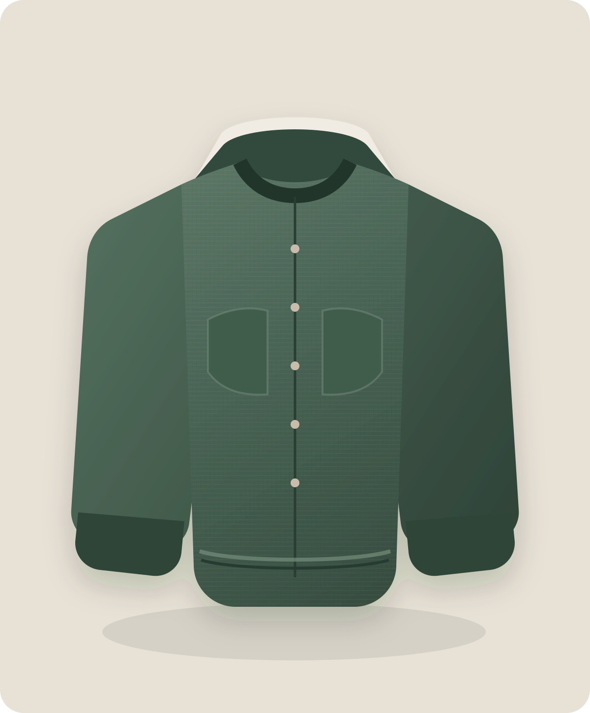

Soft shoulder
어깨선이 자연스럽게 내려와 체형에 부드럽게 적응합니다.

FORME Atelier / 26 Summer
리넨의 자연스러운 결에 구조적인 실루엣을 더한 가벼운 블루종.
사이즈를 선택해주세요.
통기성이 좋은 리넨 혼방 소재입니다. 단독 찬물 세탁 후 형태를 잡아 자연 건조하세요.
평일 오후 2시 이전 주문 시 당일 출고됩니다. 수령 후 7일 이내 무료 반품할 수 있습니다.
Designed around movement
어깨선이 자연스럽게 내려와 체형에 부드럽게 적응합니다.
가볍고 통기성 좋은 혼방 직조로 여름까지 편안합니다.
상품 실측과 입력 정보를 함께 비교해 사이즈를 제안합니다.